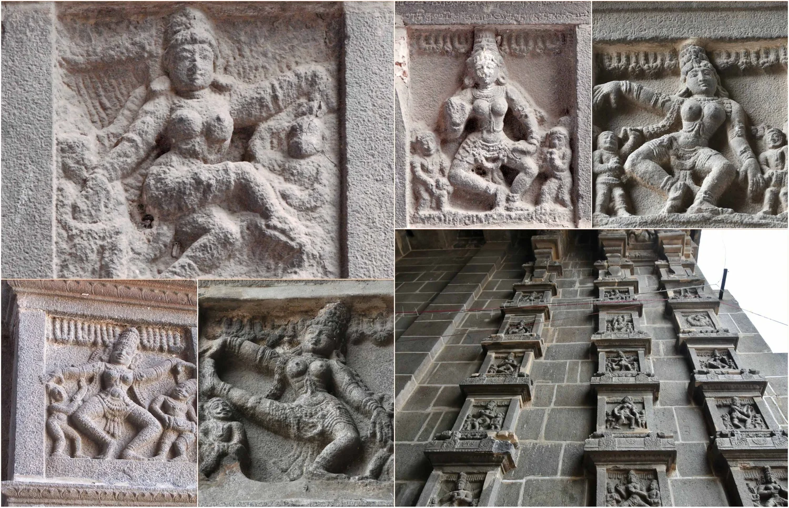

Welcome to Natyakala - The Art of Classical Dance

yato hasta stato drishti, yato drishti stato manah, yato manah stato bhava, yato bhava stato rasaha
Explore Classes
yato hasta stato drishti, yato drishti stato manah, yato manah stato bhava, yato bhava stato rasaha
Explore ClassesNatyakala – Art of Classical Dance is something very close to my heart. It grew from my love for Bharatanatyam and my desire to share this beautiful classical art with others. I am an 18-year-old Bharatanatyam dancer, and I have completed both the Junior and Senior examinations. I am currently training for the Vidvath level, and alongside my own learning, I conduct classes to spread my knowledge and passion for Bharatanatyam. Through Natyakala, my aim is to nurture talent and help students experience the true beauty of this art form. For me, Bharatanatyam is not just dance. It holds our culture, traditions, and values, and it teaches discipline, patience, focus, and expression. In my classes, I focus on strong foundations in technique, rhythm, posture, hand gestures, and abhinaya, while encouraging students to grow confidently and gracefully at their own pace. Natyakala welcomes students of all ages and learning levels. I strive to create a warm and supportive space where every student feels comfortable to learn, express, and grow. I truly believe that learning Bharatanatyam is a wonderful journey, and I assure you that this journey will be meaningful, enriching, and filled with joy. Through dedication, practice, and love for the art, I hope to carry forward the beauty of Bharatanatyam and keep its essence alive for future generations.
Bharatanatyam is believed to have originated from the divine itself. According to ancient tradition, this sacred art was revealed by the gods as a way for humans to understand life, emotion, and devotion through movement. Lord Brahma is said to have created Natya by combining elements of the Vedas, and this divine knowledge was passed on to sages and later brought down to the earth to be shared with humankind. From this divine source, Bharatanatyam took form as a spiritual practice, where dance became a medium to express devotion, discipline, and surrender. In its earliest days, Bharatanatyam flourished in temples, where it was performed as an offering to the deity. The dance narrated stories of gods and goddesses, divine love, cosmic balance, and human emotions, allowing devotees to experience spirituality through rhythm, gesture, and expression. Every movement was symbolic, every posture meaningful, and every expression a reflection of inner devotion. Over centuries, this sacred tradition was carefully preserved and passed down by dedicated practitioners. Though it later moved from temple spaces to the stage, Bharatanatyam never lost its spiritual essence. Even today, it remains deeply rooted in devotion, discipline, and tradition, standing as a reminder of its divine origin and its timeless connection between the human and the divine.
